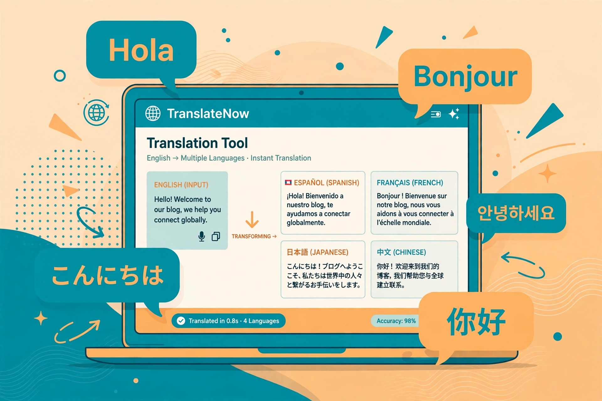
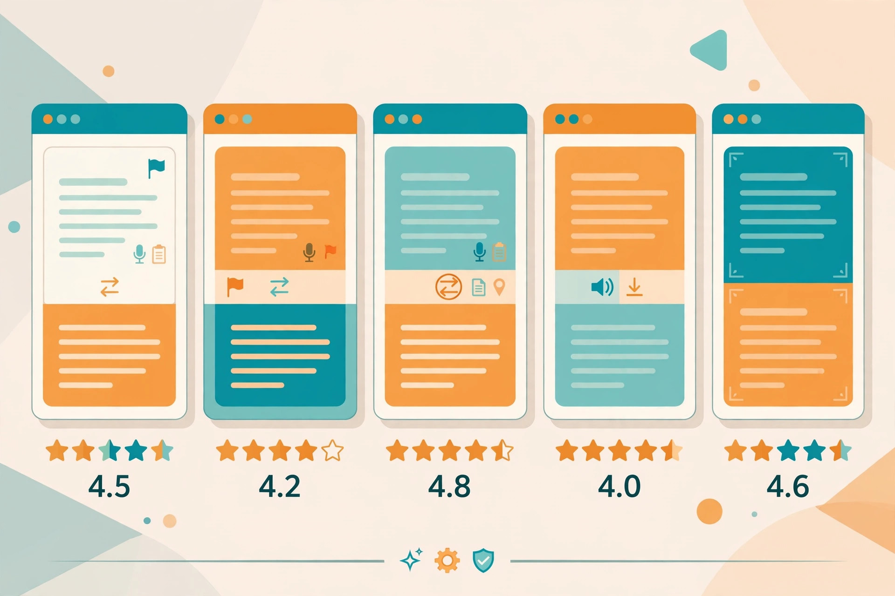

5 AI Translators That Don’t Make You Sign Up, Tested (2026)
Translation is one of the oldest problems on the internet — and one of the most gated. The best-known AI translators increasingly want an account before they'll translate your document, save your history, or even let you paste more than a sentence. This guide compares 5 translators whose free tiers are documented as usable without an account, so you can translate text right now without surrendering your email first.

A note on method before we start: this comparison is built from each tool's official pricing pages, FAQs, and documentation as of October 2026, not from a one-afternoon hands-on session that would be stale by next quarter. Translator free tiers change often — where the official site is ambiguous, it's flagged rather than guessed. If a tool suddenly demands a login, its terms changed; the criteria below tell you what to check.
What to look for in a translator
Four things decide whether a "free" translator is actually useful:
Language coverage. The big players support 100+ languages; smaller tools may cover 50 or fewer. If you translate between common European languages, almost anything works. If you need Urdu, Swahili, or Vietnamese, check the list before you paste.
Character limits. Free tiers almost always cap how much text you can translate at once — anywhere from a few hundred to several thousand characters. A 5,000-character limit handles most emails and articles; a 500-character limit means translating paragraph by paragraph.
Quality vs. literalness. Older machine translation (Google's classic mode) is fast and broad but famously literal — fine for gist, risky for nuance. Newer AI-powered translators (DeepL, LLM-based tools) handle idiom and tone better. For anything that matters — a contract, a job application — quality beats speed.
Privacy. Free translators process your text on their servers. Most say they don't store it; some use it for training. Don't paste passwords, medical details, or confidential business text into any free translator, account or not.
1. QuillBot Translate — the generous free tier
QuillBot is best known as a paraphrasing tool, but its translator is one of the most generous free options documented anywhere: 5,000 characters per translation, over 50 languages, no sign-up required.
No-sign-up access: The free translate page works without an account — paste up to 5,000 characters, pick your languages, translate. That's roughly two pages of text in one go, more than most competitors allow for free.
Best for: Translating emails, essays, and articles in common language pairs. The 5,000-character cap is the standout feature here — it means fewer copy-paste rounds than almost any other free tool.
Watch out for: 50+ languages is solid but not comprehensive — check your pair is covered before you rely on it. And like every free translator, the real quality test is your specific language pair; machine translation quality varies enormously between, say, English–Spanish and English–Thai.
2. Grammarly Translate — translation plus a polish pass
Grammarly's translator covers 52 languages with no sign-up required — and it adds something the others don't: after translating, it applies Grammarly's grammar and clarity suggestions to the output.
No-sign-up access: The translate tool is documented as free with no account needed. You paste text, choose your languages, and get a translation that then benefits from Grammarly's writing-quality layer.
Best for: Anyone translating into English (or another language they write in) who wants the output to read well, not just be accurate. The grammar pass is genuinely useful for emails and professional documents — it's the closest thing here to a translation plus an editor.
Watch out for: 52 languages is narrower than Google's 249. And the grammar suggestions are tuned for English first; the polish pass is less valuable if your target language isn't one Grammarly knows deeply. For a full AI writing assistant without an account, our tested no-signup AI agents roundup covers chatbots that can translate and rewrite in one conversation.

3. Converter App AI Translator — the context-aware one
Converter App's AI translator takes a different approach: instead of a bare text box, it offers context-aware translation with tone hints — you can nudge the output toward formal, casual, or neutral register.
No-sign-up access: The tool is free with no sign-up, handling around 2,500 characters per translation. That's a moderate cap — enough for most emails and short documents, less than QuillBot's 5,000.
Best for: Situations where tone matters as much as accuracy — a job application (formal), a message to a friend (casual), a product description (neutral). Most free translators ignore register entirely; having even a basic tone control is a real differentiator.
Watch out for: The 2,500-character limit means longer documents need splitting. And tone hints are a guide, not a guarantee — always have a native speaker check anything where the wrong register could embarrass you.
4. Google Translate — the baseline everyone knows
Google Translate needs no introduction: 249 languages, no sign-in required for the core text translation, camera and voice input on mobile, and it's been free since 2006. It's the reference point everything else is measured against.
No-sign-up access: Text translation in the browser requires no Google account. Paste, pick languages, translate — with some of the highest character limits of any free tool and by far the widest language coverage.
Best for: Rare language pairs, quick gist translations, and the mobile app's camera mode (point at a menu or sign). When you need to translate between two languages that smaller tools don't cover, Google is often the only free option.
Watch out for: Quality is uneven — excellent for Spanish and French, literal and occasionally comic for languages with very different grammar from English. Google's privacy terms also allow them to use your translations to improve their services, so keep sensitive text out. And the web interface now nudges toward signing in for history and saved translations; the core translate function still works without it.
5. DeepL — the quality pick, with an honest catch
DeepL is widely regarded as the most accurate free translator for European languages — and it's included here as the honest contrast, because its best features sit behind an account wall.
No-sign-up access: Basic text translation works without an account, with high quality for supported languages. But the features that make DeepL special — document translation (3 free file translations per month), glossary control, and tone selection — require a free account. There's no way around it.
Best for: European language pairs where nuance matters: German, French, Dutch, Polish, and friends. If you're translating a contract, a paper, or anything where a mistranslation has consequences, DeepL's free text tier (no account) is worth trying first — and if you regularly translate long documents, our free PDF summarizer roundup covers account-free tools for the summarize-after-translating workflow.
Watch out for: Language coverage is narrower than Google's (around 30+ languages, heavily European). The free text tier also has character limits that aren't published as clearly as competitors'. Treat DeepL as the quality specialist, not the universal tool.
Side-by-side comparison
| Tool | Truly no sign-up? | Languages | Free character limit |
|---|---|---|---|
| QuillBot Translate | Yes | 50+ | ~5,000 per translation |
| Grammarly Translate | Yes | 52 | Documented as free |
| Converter App | Yes | Varies | ~2,500 per translation |
| Google Translate | Yes (core text) | 249 | Very high |
| DeepL | Text yes; documents need account | 30+ | Limited (unpublished) |
"Truly no sign-up" means the core text translation flow is documented as account-free. Features gated behind login (like DeepL's document translation) are flagged in the row.
Which one should you actually use?
You want the most text per paste, no account: QuillBot Translate. The 5,000-character limit is the most generous documented free tier here, and 50+ languages covers the common pairs.
You want the output to read well, not just be accurate: Grammarly Translate. The grammar-and-clarity pass on top of translation is unique in this list — especially valuable when translating into a language you write professionally in.
Tone matters (formal vs. casual): Converter App's AI translator. The tone hints won't replace a native speaker, but they're the only register control in the free tier here.
You need a rare language pair: Google Translate. 249 languages is in a different league; nobody else here comes close. Accept the literalness for gist, and don't paste anything confidential.
Accuracy matters more than anything (European languages): DeepL's free text tier. No account needed for basic translation, and the quality gap on German/French/Dutch is real — just know the document features need a login.
FAQ
Are free AI translators accurate enough for professional use?
For gist and casual communication, yes. For anything with consequences — contracts, medical instructions, published content — no free translator should be your last step. DeepL is the closest to professional quality for European languages, but even it benefits from a native speaker's review. The honest rule: free translation gets you 90% of the way; the last 10% is human.
Why do translators ask for sign-up at all?
Three reasons: history and saved translations (a convenience feature), document translation (expensive to process), and data — your translations improve their models. The text-translation core is cheap to offer; everything around it is the upsell. That's why this roundup focuses on the core: it's the part most tools will give you for free.
Can I translate a whole document without signing up?
Mostly no — document upload (PDF, DOCX) is the most commonly gated feature. DeepL gives 3 free document translations a month but requires an account. Your best no-sign-up workaround: copy the text out and paste it in chunks into a text translator like QuillBot's, then use an account-free summarizer if you need the short version.
Do free translators store my text?
Assume yes. Most free translators process text on their servers and their privacy policies allow using it for service improvement. Google is explicit about this. Never paste passwords, API keys, medical records, or confidential business documents into any free translator — account or not.
What's the difference between AI translation and old machine translation?
Classic machine translation (early Google Translate) worked phrase-by-phrase, producing literal but often awkward output. Modern AI translation uses large neural models that consider whole sentences and context — better idiom, better tone, fewer comic mistranslations. In practice, the tools in this list all use neural approaches now; the quality differences come from training data and language-pair coverage, not the underlying technique.